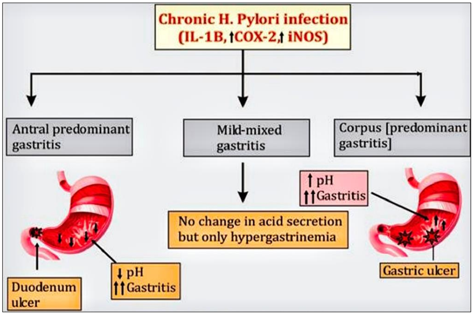
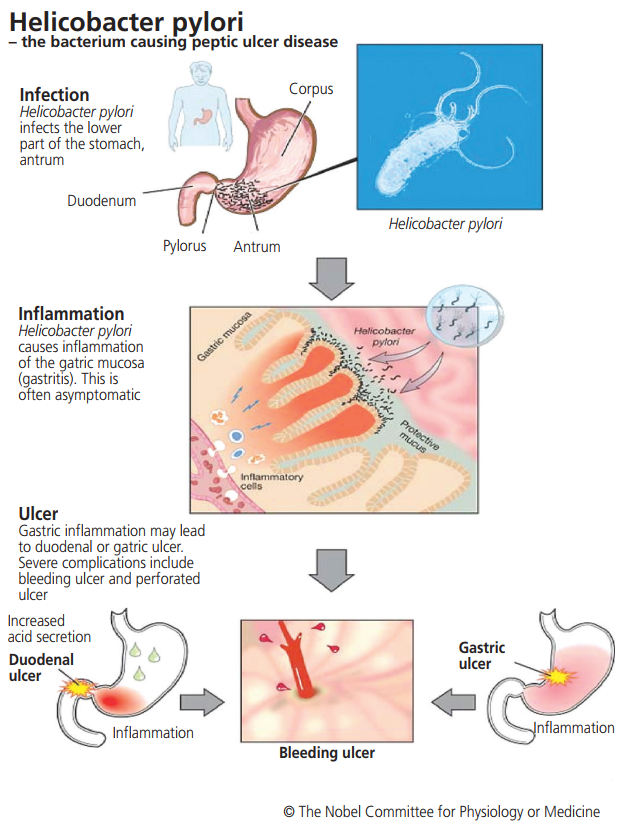
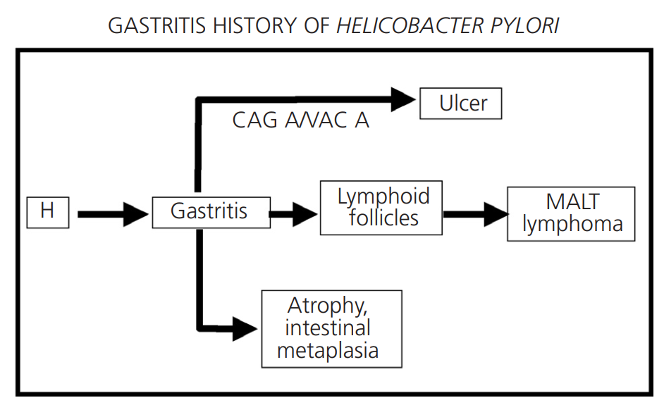

SINH LÝ BỆNH & CƠ CHẾ BỆNH SINH NHIỄM KHUẨN HELICOBACTER PYLORI
Helicobacter pylori Pathophysiology & Pathogenesis — Phân tích chi tiết hệ thống thích nghi sinh học men Urease, các yếu tố độc lực phân tử (CagA/T4SS, VacA, DupA), cơ chế rẽ nhánh bệnh lý theo vị trí định cư (hang vị vs thân vị), chuỗi biến đổi mô học ác tính Correa, và cơ chế đột biến kháng kháng sinh đa thuốc.
Helicobacter pylori (H. pylori) là xoắn khuẩn Gram âm, vi hiếu khí, cư trú chủ yếu tại lớp chất nhầy sát bề mặt biểu mô niêm mạc dạ dày người. Được phát hiện năm 1979 bởi Robin Warren và phân lập, nuôi cấy thành công năm 1982 bởi Barry Marshall (giải Nobel Y học 2005), phát hiện này đã lật đổ hoàn toàn quan niệm y khoa kinh điển cho rằng dạ dày là môi trường vô trùng. Tổ chức Y tế Thế giới (WHO/IARC) đã phân loại H. pylori là tác nhân sinh ung thư Nhóm I (Group 1 Carcinogen) từ năm 1994, đứng đầu căn nguyên gây viêm dạ dày mạn tính, loét dạ dày – tá tràng, u lympho MALT và ung thư biểu mô tuyến dạ dày.
Phần I: Cơ Chế Thích Nghi Sinh Học & Xâm Nhập Hàng Rào Chất Nhầy Dạ Dày
Dịch vị dạ dày có nồng độ acid clohydric (HCl) cực cao với pH thường duy trì từ 1.0 đến 2.0 — một rào cản hóa học khắc nghiệt có thể tiêu diệt hầu hết các vi sinh vật. Tuy nhiên, H. pylori là một vi khuẩn trung tính chịu acid (acid-tolerant neutrophile), phát triển một tổ hợp các cơ chế tinh vi để xâm nhập và định cư lâu dài:
1. Men Urease & Đám Mây Kiềm
H. pylori sản xuất enzyme Urease với số lượng khổng lồ (chiếm tới 10–15% tổng lượng protein của vi khuẩn). Urease xúc tác thủy phân Urea nội sinh thành Ammonia (NH3) và Carbon dioxide (CO2). NH3 thu nhận ion H+ tự do tạo thành ion NH4+, hình thành một "đám mây kiềm" vi môi trường bao quanh màng tế bào vi khuẩn, nâng pH cục bộ lên mức sinh lý trung tính (~7.0).
2. Lông Roi (Flagella) & Vận Động
Vi khuẩn sở hữu 4 đến 6 lông roi có vỏ bao (sheathed flagella) ở một cực. Hình thái xoắn ốc kết hợp lực quay cánh quạt của chùm lông roi tạo ra mô-men xoắn cơ học mạnh mẽ, cho phép vi khuẩn "khoan" xuyên qua lớp gel chất nhầy dạ dày có độ nhớt cao để di chuyển nhanh chóng về phía lớp biểu mô có pH trung tính trước khi bị dòng acid cuốn trôi.
3. Bám Dính Biểu Mô (Adhesins)
Sau khi tiếp cận bề mặt tế bào biểu mô, vi khuẩn liên kết bền vững thông qua các phân tử bám dính bề mặt (Adhesins): BabA (Blood group antigen-binding adhesin) liên kết kháng nguyên Lewis b; SabA (Sialic acid-binding adhesin) liên kết sialyl-Lewis x; HopQ gắn kết phân tử CEACAM. Sự bám dính này giúp vi khuẩn kháng lại lực nhu động tống xuất thức ăn.
Phần II: Các Yếu Tố Độc Lực & Cơ Chế Sinh Bệnh Học Phân Tử Phá Hủy Niêm Mạc
Mức độ tổn thương tế bào, độ nặng của viêm loét và nguy cơ ung thư biểu mô tuyến dạ dày tương quan chặt chẽ với các yếu tố độc lực do các chủng H. pylori biểu hiện:
CagA & Hệ Thống T4SS
Độc lực cao (Oncoprotein)CagA (Cytotoxin-associated gene A) là protein độc lực tối quan trọng, được mã hóa trên đảo bệnh sinh cag PAI (Pathogenicity Island). Vi khuẩn sử dụng hệ thống bài tiết tuýp IV (T4SS) như một "kim tiêm phân tử" cắm xuyên màng tế bào biểu mô dạ dày để bơm trực tiếp protein CagA vào bào tương của tế bào ký chủ.
CagA phosphoryl hóa liên kết và kích hoạt phosphatase SHP-2, gây rối loạn cấu trúc khung tế bào actin, phá hủy các phức hợp liên kết vòng bịt (tight junctions như ZO-1, claudin-1), gây tăng sinh tế bào mất kiểm soát và kích thích chuyển dạng tiền ung thư (Epithelial-Mesenchymal Transition - EMT).
VacA (Vacuolating Cytotoxin A)
Ngoại độc tố ApoptosisVacA là ngoại độc tố protein được vi khuẩn tiết ra môi trường xung quanh, tự gắn vào màng tế bào biểu mô và được nhập bào (endocytosis). Bên trong tế bào, VacA tạo các kênh chọn lọc anion clorua trên màng nội bào, làm trương phình endosome và tạo các không bào (vacuoles) khổng lồ bên trong bào tương.
Đồng thời, VacA thâm nhập trực tiếp vào ty thể, làm mở kênh chuyển tiếp tính thấm màng ty thể (mPTP), giải phóng Cytochrome C vào bào tương và kích hoạt chuỗi Caspase gây chết tế bào biểu mô theo chương trình (Apoptosis). Ngoài ra, VacA còn ức chế sự tăng sinh và hoạt hóa của tế bào lympho T helper, giúp vi khuẩn trốn thoát đáp ứng miễn dịch của ký chủ.
DupA & Yếu Tố Hướng Động Viêm
Thúc đẩy Loét Tá TràngDupA (Duodenal ulcer promoting gene a) là gene độc lực liên quan trực tiếp đến việc tăng tiết cytokine hướng động mạnh Interleukin-8 (IL-8) từ tế bào biểu mô hang vị. IL-8 thu hút và kích hoạt các bạch cầu trung tính (neutrophils) thâm nhiễm ồ ạt, phóng thích gốc tự do oxy hóa (ROS) và protease gây viêm trợt cấp và loét hành tá tràng.
Các yếu tố khác bao gồm IceA (Induced by contact with epithelium), OipA (Outer inflammatory protein A) và Urease (ngoài vai trò nâng pH còn kích hoạt giải phóng các cytokine tiền viêm IL-1β, TNF-α, IL-6).
Bảng Tổng Hợp Các Yếu Tố Độc Lực Của Helicobacter pylori
| Yếu tố độc lực | Bản chất & Vị trí | Cơ chế bệnh sinh phân tử | Kết cục lâm sàng chính |
|---|---|---|---|
| CagA / T4SS | Oncoprotein trên đảo cag PAI, tiết qua hệ thống bài tiết Type IV | Phosphoryl hóa bởi Src → hoạt hóa SHP-2 → biến dạng tế bào kiểu "hummingbird", phá vỡ tight junctions, kích thích tăng sinh | Viêm dạ dày nặng, Loét dạ dày – tá tràng, Ung thư biểu mô tuyến dạ dày |
| VacA | Ngoại độc tố protein tiết ra ngoài màng vi khuẩn | Tạo không bào khổng lồ nội bào, đục thủng màng ty thể → thoát Cytochrome C → kích hoạt Apoptosis, ức chế tế bào T | Tổn thương biểu mô, loét niêm mạc, suy giảm miễn dịch tế bào tại chỗ |
| DupA | Gene độc lực trên NST vi khuẩn | Kích thích tế bào biểu mô hang vị tăng sinh mạnh IL-8 → hướng động bạch cầu trung tính rầm rộ | Gia tăng mạnh nguy cơ Loét tá tràng (Duodenal Ulcer) |
| Urease | Enzyme nội bào & bề mặt (10–15% tổng protein) | Thủy phân urea tạo NH3/NH4+ trung hòa acid; ion amoni gây độc trực tiếp ty thể và màng tế bào | Giúp vi khuẩn sống sót trong dịch vị acid; khởi phát viêm trợt niêm mạc |
| BabA / SabA / HopQ | Adhesins protein màng ngoài (OMPs) | Liên kết đặc hiệu kháng nguyên nhóm máu Lewis b, sialyl-Lewis x và phân tử CEACAM của tế bào ký chủ | Bám dính bền vững, chống nhu động dạ dày, tạo điều kiện cho T4SS tiêm CagA |
| Lông roi (Flagella) | 4–6 lông roi có bao ở một cực | Tạo lực chuyển động cơ học bơi xoắn ốc qua lớp gel nhầy dạ dày | Xâm nhập và định cư sâu sát bề mặt biểu mô niêm mạc |
Phần III: Phản Ứng Viêm Ký Chủ & Sự Rẽ Nhánh Bệnh Lý Theo Vùng Định Cư
Sự cư trú của H. pylori kích hoạt đáp ứng miễn dịch bẩm sinh và thích ứng kéo dài tại niêm mạc dạ dày. Tuy nhiên, đáp ứng miễn dịch không thể tiệt trừ được vi khuẩn mà ngược lại trở thành động lực chính thúc đẩy phá hủy mô mạn tính. Đặc điểm phân bố tổn thương loét và nguy cơ ung thư phụ thuộc chặt chẽ vào vùng dạ dày bị định cư ưu thế:
1. Viêm Ưu Thế Vùng Hang Vị (Antral-Predominant Gastritis)
↑↑ Acid (Tăng toan) → Loét Tá TràngKhi vi khuẩn khu trú chủ yếu tại vùng hang vị dạ dày:
- Phản ứng viêm mạn tính gây tổn thương chọn lọc các tế bào D (D-cells) ở hang vị, làm sụt giảm nghiêm trọng nồng độ Somatostatin (hormone ức chế tiết gastrin).
- Sự mất ức chế hồi tác này khiến tế bào G (G-cells) tăng tiết mạnh Gastrin vào máu (Hypergastrinemia).
- Gastrin theo tuần hoàn đến kích thích trực tiếp tế bào thành (Parietal cells) và tế bào ECL ở vùng thân vị (nơi niêm mạc còn nguyên vẹn chưa bị viêm) tăng bài tiết acid HCl dữ dội (Hyperchlorhydria).
- Lượng acid dư thừa tràn xuống hành tá tràng vượt quá dung lượng đệm của bicarbonate dịch tụy, gây xói mòn niêm mạc và kích hoạt hiện tượng dị sản biểu mô dạ dày tại tá tràng (Gastric metaplasia in duodenum).
- H. pylori xâm nhập và định cư trên các đảo biểu mô dị sản này tại tá tràng, kích hoạt phản ứng viêm tại chỗ và hình thành ổ Loét tá tràng (Duodenal Ulcer). Thể bệnh này có nguy cơ ung thư dạ dày rất thấp.
2. Viêm Ưu Thế Vùng Thân Vị Hoặc Viêm Toàn Bộ Dạ Dày (Corpus-Predominant / Pangastritis)
↓↓ Acid (Giảm toan) → Loét Dạ Dày & Ung ThưKhi vi khuẩn lan tỏa định cư ưu thế ở vùng thân vị hoặc toàn bộ dạ dày:
- Phản ứng viêm mạn tính thâm nhiễm lympho bào và bạch cầu đa nhân phá hủy trực tiếp các tuyến dạ dày và tế bào thành (Parietal cells) tại thân vị.
- Dẫn đến tình trạng viêm teo niêm mạc dạ dày (Gastric atrophy) và suy giảm bài tiết acid mạn tính (Hypochlorhydria hoặc Achlorhydria).
- Sự sụt giảm acid làm pH dạ dày tăng cao, tạo điều kiện cho các vi khuẩn yếm khí đường ruột phát triển sinh ra các hợp chất sinh ung N-nitroso.
- Tình trạng viêm teo niêm mạc mạn tính kết hợp độc tính CagA/VacA là căn nguyên trực tiếp hình thành Loét dạ dày (Gastric Ulcer) và khởi động chuỗi biến đổi ác tính tiến triển thành Ung thư biểu mô tuyến dạ dày (Gastric Adenocarcinoma).
3. Viêm Dạ Dày Hỗn Hợp Mức Độ Nhẹ (Mild-Mixed Gastritis)
Không thay đổi toan / Không loétVi khuẩn phân bố đều khắp dạ dày ở mật độ thấp, không gây biến đổi đáng kể tổng lượng acid bài tiết, có thể tăng nhẹ gastrin máu nhưng không hình thành ổ loét trên lâm sàng (chiếm đa số người nhiễm mang khuẩn không triệu chứng).

(Nguồn: Ghonge et al., GSC Adv Res Rev, 2025). Nhiễm khuẩn mạn tính kích hoạt giải phóng các cytokine tiền viêm (IL-1β, COX-2, iNOS) rẽ nhánh thành: (1) Antral predominant gastritis → tăng tiết acid → Loét tá tràng; (2) Mild-mixed gastritis → tăng gastrin máu đơn thuần; (3) Corpus predominant gastritis → phản ứng viêm niêm mạc tăng mạnh → phá hủy tế bào thành gây teo niêm mạc → Loét dạ dày & Ung thư.

Ba giai đoạn tiến triển chính: (1) Infection: Vi khuẩn xâm nhập và định cư ở phần thấp dạ dày (hang vị); (2) Inflammation: Kích hoạt viêm niêm mạc dạ dày (gastritis) âm thầm; (3) Ulcer: Phá hủy lớp chất nhầy bảo vệ, acid dịch vị ăn mòn niêm mạc gây loét tá tràng hoặc loét dạ dày kèm các biến chứng đe dọa tính mạng (xuất huyết tiêu hóa, thủng ổ loét).
Phần IV: Chuỗi Biến Đổi Mô Học Ác Tính (Correa's Cascade) & U Lympho MALT
Dưới tác động của phản ứng viêm kéo dài hàng chục năm do H. pylori phối hợp với các yếu tố môi trường (chế độ ăn mặn, hút thuốc lá, thiếu vi chất), cấu trúc mô học biểu mô dạ dày biến đổi tuần tự qua chuỗi tiến trình phát sinh ung thư của Pelayo Correa (Correa's Cascade):
1. Viêm Teo & Dị Sản Ruột (Metaplasia)
Viêm mạn tính gây mất các tuyến bình thường của dạ dày (tuyến bài tiết acid và pepsinogen). Cơ thể thích nghi bằng cách thay thế biểu mô dạ dày bằng biểu mô dạng ruột có vi nhung mao và tế bào đài tiết chất nhầy (Goblet cells):
- Dị sản ruột hoàn toàn (Type I - Complete): Biểu mô ruột non hoàn chỉnh với enzyme brush-border (nguy cơ ác tính thấp).
- Dị sản ruột không hoàn toàn (Type II/III - Incomplete): Biểu mô dạng đại tràng tiết sulfomucin (nguy cơ ác tính cao, tổn thương tiền ung thư thực thụ).
2. Nghịch Sản (Dysplasia) & Ung Thư Tuyến
Tế bào biểu mô tích tụ các đột biến gene (TP53, CDH1, KRAS, PIK3CA) và bất thường biểu sinh (hypermethylation promoter của các gene đè nén u):
- Nghịch sản độ thấp (Low-grade Dysplasia): Nhân tế bào to, tăng sắc nhẹ, phân cực còn duy trì.
- Nghịch sản độ cao (High-grade Dysplasia): Rối loạn cấu trúc tuyến nặng nề, mất phân cực, tương đương ung thư biểu mô tại chỗ (Carcinoma in situ).
- Adenocarcinoma: Xâm lấn qua màng đáy vào lớp dưới niêm mạc.
3. U Lympho MALT (MALT Lymphoma)
Bình thường niêm mạc dạ dày không có mô lympho. Nhiễm khuẩn H. pylori kích thích phản ứng miễn dịch mạn tính hình thành các nang lympho thứ phát (Mucosa-Associated Lymphoid Tissue - MALT) tại lớp đệm niêm mạc.
Sự kích thích kháng nguyên kéo dài làm tăng sinh đơn dòng các tế bào lympho B vùng biên (Marginal zone B-cells), hình thành tổn thương xâm lấn biểu mô (lymphoepithelial lesions). Ở giai đoạn sớm (chưa có chuyển vị NST t(11;18)), tiệt trừ thành công H. pylori bằng kháng sinh có thể giúp u lympho MALT thoái lui hoàn toàn ở 70–80% trường hợp mà không cần xạ trị hay hóa trị.

Tiến trình phân nhánh từ viêm dạ dày nông (Superficial gastritis) và hình thành các nang lympho (Lymphoid follicles): (1) Nhánh phát triển thành viêm loét dạ dày tá tràng (Ulcer); (2) Nhánh thúc đẩy tăng sinh lympho B tiến triển u lympho mô liên kết niêm mạc (MALT lymphoma); (3) Nhánh viêm teo niêm mạc & dị sản ruột (Atrophy, intestinal metaplasia) → Nghịch sản (Dysplasia) → Ung thư biểu mô tuyến dạ dày (Carcinoma).
Phần V: Cơ Chế Sinh Học Phân Tử Của Sự Đề Kháng Kháng Sinh Ở H. pylori
Sự thất bại của các phác đồ tiệt trừ H. pylori (đặc biệt là phác đồ 3 thuốc kinh điển PPI – Clarithromycin – Amoxicillin) chủ yếu xuất phát từ tỷ lệ đột biến gene kháng thuốc ngày càng gia tăng trên toàn cầu. Khác với nhiều vi khuẩn đường ruột khác truyền plasmid kháng thuốc, H. pylori đề kháng kháng sinh chủ yếu thông qua đột biến điểm (point mutations) trên nhiễm sắc thể tại các gene đích:
Clarithromycin (Macrolide)
gene rrna23SCơ chế tác dụng: Gắn vào tiểu đơn vị 50S ribosome vi khuẩn (vùng peptidyl transferase của 23S rRNA), ức chế tổng hợp chuỗi polypeptide.
Đột biến kháng thuốc: Đột biến điểm tại vùng peptidyl transferase của gene rrna23S: A2142G A2142C A2143G A2144G. Đột biến làm biến dạng không gian vị trí gắn, làm mất hoàn toàn ái lực của Clarithromycin. Đột biến A2143G là dạng phổ biến nhất tại Việt Nam và Châu Á.
Amoxicillin (β-Lactam)
gene pbp1Cơ chế tác dụng: Gắn vào các protein liên kết penicillin (PBPs), ức chế enzyme transpeptidase tổng hợp vách peptidoglycan.
Đột biến kháng thuốc: Tích tụ các đột biến sai nghĩa (missense) tại module gắn penicillin của protein PBP-1A (mã hóa bởi gene pbp1), đặc biệt tại vị trí Asn562Tyr Asn562Lys Phe366 Ser414 Thr556. Làm giảm ái lực liên kết của Amoxicillin với vách tế bào vi khuẩn.
Metronidazole (Nitroimidazole)
gene rdxA / frxACơ chế tác dụng: Tiền chất cần được enzyme nitroreductase của vi khuẩn khử hóa thành các gốc tự do nitro hoạt động phá hủy DNA.
Đột biến kháng thuốc: Đột biến vô nghĩa (nonsense), dịch khung (frameshift) hoặc missense làm bất hoạt hoàn toàn enzyme RdxA (oxygen-insensitive NADPH nitroreductase) phối hợp với đột biến gene frxA/frxB, khiến vi khuẩn mất khả năng kích hoạt thuốc.
Levofloxacin (Fluoroquinolone)
gene gyrA / gyrBCơ chế tác dụng: Ức chế enzyme DNA gyrase (topoisomerase II), ngăn cản quá trình tháo xoắn và nhân đôi DNA vi khuẩn.
Đột biến kháng thuốc: Đột biến điểm tại vùng quyết định kháng quinolone (QRDR) của gene gyrA tại các axit amin Asn87Lys/Tyr Asp91Gly/Asn/Tyr và đột biến vùng Glu415–Ser454 trên gyrB. Làm thay đổi cấu hình vị trí gắn quinolone.
Tetracycline
gene rrna16SCơ chế tác dụng: Gắn vào tiểu đơn vị 30S ribosome, ngăn chặn aminoacyl-tRNA gắn vào vị trí A.
Đột biến kháng thuốc: Đột biến bộ ba nucleotid đặc hiệu AGA926-928TTC trên gene rrna16S (16S rRNA). Tỷ lệ kháng Tetracycline hiện tại vẫn ở mức thấp (<5% ở hầu hết các khu vực).
Bảng Tiêu Chuẩn Phân Loại & Các Vị Trí Đột Biến Kháng Kháng Sinh Của H. pylori
| Kháng sinh | Gene đích | Vị trí đột biến Amino Acid / Nucleotid | Tiêu chuẩn xác định kháng thuốc trên phân tích phân tử (NGS / PCR) |
|---|---|---|---|
| Amoxicillin | pbp1 | Phe366, Gly367, Ala369, Ser414, Val469, Phe473, Thr541, Ser543, Thr556, Thr558, Asn560, Asn562 của protein Pbp1 | Nhận diện tối thiểu một trong các đột biến tại các vị trí axit amin này |
| Clarithromycin | HPrrna23S | A2142, A2143, A2144 (vùng 23S rRNA) | Phát hiện đột biến điểm thay thế tại ít nhất một trong ba nucleotid này |
| Metronidazole | rdxA, frxA, frxB | Arg16, His17, Ser18, Lys20, Arg41, Leu42, Ser43, Ser45, Ser46, Tyr47, Asn48, Gln50, Val55, Met56, Asn73, Ile142, Gly145, Met149, Ile160, Gly162, Gly163, Arg200, Ser202, Trp209 của protein RdxA | Đột biến missense tại các vị trí của RdxA, hoặc đột biến vô nghĩa (nonsense), đột biến dịch khung gây cắt cụt protein của RdxA, FrxA, FrxB |
| Tetracycline | HPrrna16S | Vùng nucleotid AGA926-928 (16S rRNA) | Đột biến chuyển đổi thành bộ ba nucleotid TTC |
| Levofloxacin | gyrA, gyrB | Vị trí Asn87 và Asp91 trên protein GyrA; Vùng QRDR (Glu415-Ser454) trên protein GyrB | Xuất hiện đột biến tại các vị trí mô tả ở gene gyrA và/hoặc gyrB |
Phần VI: Sơ Đồ Tổng Hợp Sinh Lý Bệnh & Tương Quan Lâm Sàng Chẩn Đoán
Mối Tương Quan Giữa Sinh Lý Bệnh & Các Phương Pháp Xét Nghiệm Chẩn Đoán
1. Test Thở Urea (Urea Breath Test - UBT)
Cơ sở sinh lý: Khai thác hoạt tính men Urease cực mạnh của vi khuẩn. Bệnh nhân uống dung dịch Urea gắn đồng vị phóng xạ 13C (không phóng xạ) hoặc 14C (phóng xạ liều thấp). Men Urease phân cắt Urea giải phóng 13CO2 / 14CO2 khuếch tán vào máu và đào thải qua hơi thở. Độ nhạy >95%, độ đặc hiệu >95%, là tiêu chuẩn vàng không xâm lấn để chẩn đoán và kiểm tra tiệt trừ sau điều trị.
2. Test Nhanh Urease Khi Nội Soi (RUT / CLO Test)
Cơ sở sinh lý: Mảnh sinh thiết niêm mạc hang vị được đặt vào môi trường chứa Urea và chất chỉ thị màu pH (Phenol Red). Hoạt tính Urease của vi khuẩn sinh NH3 làm kiềm hóa môi trường (pH > 6.8), đổi màu thuốc thử từ màu vàng sang màu hồng cánh sen / đỏ tươi.
3. Khảo Sát Đột Biến Kháng Thuốc (PCR / NGS Panel)
Cơ sở sinh học phân tử: Khảo sát trực tiếp các đột biến điểm trên mẫu sinh thiết hoặc phân (rrna23S cho Clarithromycin, gyrA cho Levofloxacin, pbp1 cho Amoxicillin) giúp bác sĩ cá thể hóa phác đồ điều trị trúng đích theo kháng sinh đồ phân tử, tránh sử dụng mù các thuốc đã bị đề kháng cao.
Thuốc ức chế bơm Proton (PPI), Kháng sinh và Hợp chất Bismuth ức chế mạnh mật độ và hoạt tính men Urease của vi khuẩn, gây ra tỷ lệ âm tính giả (false-negative) rất cao. Bắt buộc phải ngừng PPI tối thiểu 2 tuần và ngừng Kháng sinh / Bismuth tối thiểu 4 tuần trước khi thực hiện Test thở UBT, Test nhanh RUT hoặc Test kháng nguyên phân (Stool Antigen Test).
Tài Liệu Tham Khảo (AMA Citations)
- Pajares JM, Gisbert JP. Helicobacter pylori: its discovery and relevance for medicine. Rev Esp Enferm Dig. 2006;98(10):770-785.
- Ghonge PG, Hatwar PR, Shelke PG, Bakal RL, Khandare SS. A comprehensive review on Peptic Ulcer Disease: Types, pathophysiology, diagnosis and treatment. GSC Advanced Research and Reviews. 2025;23(3):26-35. doi:10.30574/gscarr.2025.23.3.0156.
- Min B-J, Seo M-E, Bae JH, Kim JW, Kim JH. Development and validation of next-generation sequencing panel for personalized Helicobacter pylori eradication treatment targeting multiple species. Front Cell Infect Microbiol. 2024;14:1379790. doi:10.3389/fcimb.2024.1379790.
- Meuler DA. Helicobacter pylori and the Bacterial Theory of Ulcers. National Center for Case Study Teaching in Science. 2011:1-7.
- Nguyễn Thanh Hải, Đỗ Xuân Bách, Phạm Chính Nghĩa. Nhiễm Helicobacter pylori và yếu tố liên quan ở bệnh nhân viêm loét dạ dày–tá tràng tại Bệnh viện Hữu nghị Việt Tiệp. Tạp chí Nghiên cứu Y học. 2026;203(6):335-343.
- Taufiqqurrachman I, Syam AF, Maulahela H, et al. Comparative efficacy, safety and compliance with dual, triple and quadruple therapy as the first-line treatment regimens for Helicobacter pylori eradication: a systematic review and network meta-analysis. BMJ Open Gastroenterol. 2026;13:e002037. doi:10.1136/bmjgast-2025-002037.
- Butler TJ, Costigan C, McNamara D. Treatment of Helicobacter pylori infection. Microb Health Dis. 2025;7:e1442.